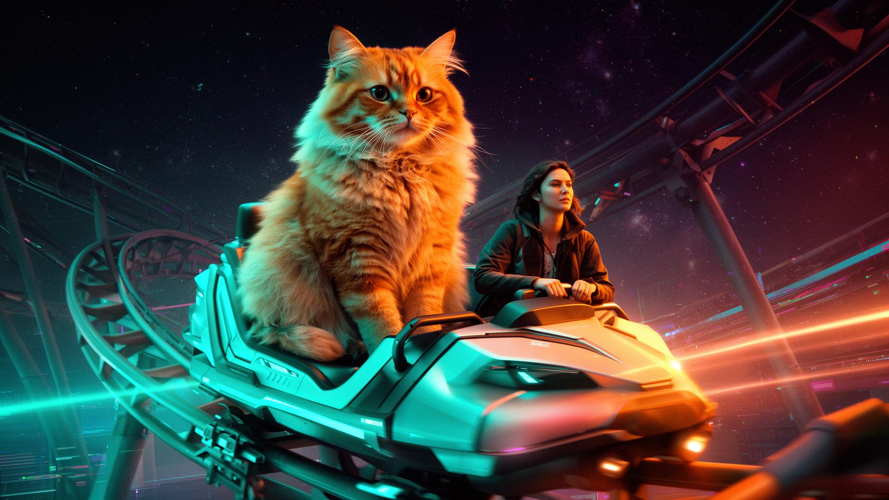

EXPERIENCES
超過十大場景，人竉，動物任選，陪你玩過沉浸／刺激場景，極度療癒。
同一個場景，貓派狗派任你切換——今天想被哪一隻毛孩帶飛？
體感回饋
體驗模式
片長
分類
動物夥伴
TECH STACK
把「會暈」的問題解決掉
VR 體驗最大的敵人不是內容，是動暈症。我們在規劃時就把它列為一級風險。
90Hz+ 高刷新率
搭配「虛擬座椅」固定參考物，大幅降低 3D 暈眩感。
Meta Quest 3 / PCVR
一體機輕便、PCVR 極致畫質——毛孩毛髮細到看得到。
風 × 震動 × 搖椅
視覺加上體感反饋，真實感直接拉滿。
011 / 終極體感
// 新潮過山車・霓虹隧道極速之旅
「全新獨立軌道．霓虹隧道．高高低低．零重力翻轉」
獨立全新場景，與普通過山車完全分開——更快、更狂、更新潮
全新打造的「新潮過山車」獨立軌道：軌道高高低低急升急降，連續穿越霓虹光環隧道，左右翻轉、零重力俯衝，電子節拍同步加速。配合 90Hz+ 刷新率與動感搖椅回饋，第一人視角整個人被吸進去，純粹刺激，無暈眩無 3D 不適。
全新獨立場景霓虹隧道穿越高高低低急升急降零重力翻轉90Hz+ 刷新率0 暈眩
POV · NEO COASTER
90Hz · G 3.2
SPEED ▲ 128 km/h
DROP −62m
限時內測中來一場
來一場
說走就走
的極限療癒之旅
留下聯絡方式，我們會把首發場次、合作邀請與線下體驗席位優先送到你信箱。